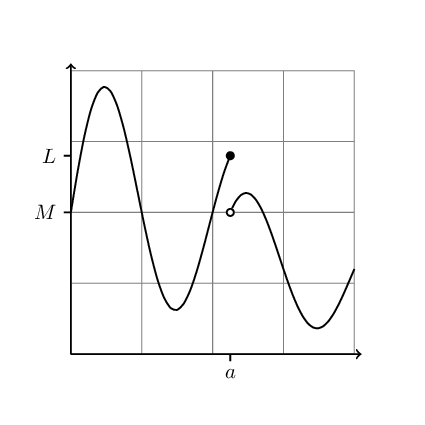
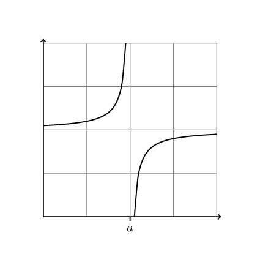
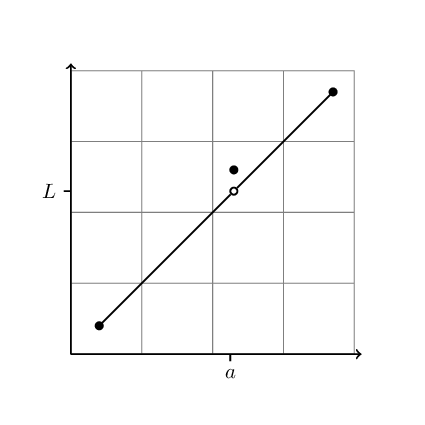
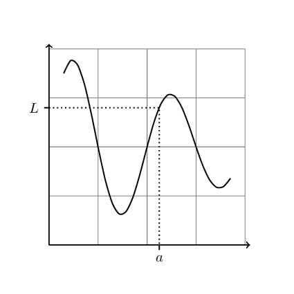
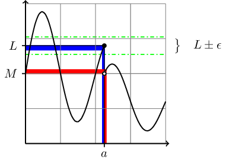

3 Limits and Continuity
3.1 Discontinuities
- Discontinuity (according to Google)
- a sharp difference of characteristics between parts of something
Discontinuities are all around us: the edges of sidewalks, potholes in the road, sudden losses of power. To model discontinuities, we need functions with discontinuities. There are several types of discontinuities that appear in functions. Three of the most common are jumps, vertical asymptotes and holes. In a jump discontinuity, the left and right parts of a function are smooth, but the two parts don’t meet (see Figure 3.1 (a)). These are useful to model switches, boundaries, or sudden shifts in outputs. A vertical asymptote where a function goes to infinity for some inputs (see Figure 3.1 (b)). A third type of discontinuity we’ll call a hole occurs when the two sides of a function are smooth and line up, but the function either isn’t defined or is completely out of line in the middle (see Figure 3.1 (c)).




The common characteristic of a discontinuity in a function is that the outputs of the function for points in the domain near the discontinuity, are not close together. For example, if a function has a jump discontinuity at some point, \(a\), then the outputs of the function for inputs near \(a\) are split into two separate intervals (see Figure 3.2 (a))

To make this notion precise, it helps to introduce some terminology.
- Neighbourhoods
- Given a point \(a\) and a (small) positive number \(\delta\) we’ll call the open interval of points \(x\) in the domain of \(f\) for which \(0 < |x-a| < \delta\) a neighbourhood of \(a\). Notice, this is simply the set of points within a distance \(\delta\) of the point \(a\).
Now we can say that a function, \(f\), has a discontinuity at a point \(a\) if either
- the function is defined in a neighbourhood of \(a\), but isn’t defined at \(a\)
- the outputs of \(f\) for inputs in a neighbourhood of \(a\) are split into two separate intervals (a jump) are are unbounded (a vertical asymptote), or simply lie outside a neighbourhood of \(f(a)\) (a hole).
Example 3.1 Consider the (piecewise) function \(f\) defined by \[f(x) = \begin{cases} x+1 & -1 \le x < 0 \\ x^2 & 0 \le x \le 1 \end{cases}\]
Does \(f\) have a discontinuity at \(0\)?
To test this with our definition of a neighbourhood, we’ll let \(\delta\) be a small positive number and evaluate \(f(x)\) for \(-\delta < x < \delta\). This interval is our neighbourhood of 0. Well, technically the neighbourhood plus the number \(0\).
We need to evaluate \(f\) in separately for the two pieces.
- If \(-\delta < x < 0\), then \(1-\delta < x+1 < 1\), so \(1-\delta < f(x) < 1\).
- If \(0 < x < \delta\), then \(0 < x^2 < \delta^2\), so \(0 < f(x) < \delta^2\).
- If \(x=0\), \(f(x) = 0\)
So the right half of our neighbourhood of 0 is near \(f(0)\), but if \(\delta < 1\), then the left half is not near \(f(0)\), it’s near 1. We have a jump discontinuity.
Example 3.2 Consider the (piecewise) function \(f\) defined by \[f(x) = \begin{cases} x+1 & -1 \le x < 0 \\ 1-x^2 & 0 \le x \le 1 \end{cases}\]
Does \(f\) have a discontinuity at \(0\)?
Since the left side of the function has the same definition, we just need to look at what \(f\) does to the right half of a neighbourhood of \(0\).
- If \(0 < x < \delta\), then \(1 < 1-x^2 < 1-\delta^2\), so \(1 < f(x) < 1-\delta^2\).
For this example, \(f(0) = 1\) and the image of a neighbourhood of 0 stays in a neighbourhood of \(f(0)\). There is no discontinuity at 0 (see ?fig-exm-discon-2).
3.2 Continuity
Our goal is to make the following statement precise.
A continuous function is one with no holes, jumps or seriously wiggly bits.
Other common intuitive definitions of continuity, are
a function \(f\) is continuous at a point \(a\) if \(f(x)\) is close to \(f(a)\) whenever \(x\) is close to \(a\), a function \(f\) is continuous if it can be drawn without lifting your pencil from the paper.
Following on the examples of discontinuities and the study of how a function acts on neighbourhoods of a point leads to the classic epsilon-delta definition of continuity.
Definition 3.1 A function \(f\) is continuous at a point \(a\) if for every \(\epsilon>0\) there is a \(\delta>0\) for which \[|f(x) - f(a)| < \epsilon \quad \text{whenever} \quad x\in N_\delta\] where \(N_\delta\) is the set of all points \(x\) in the domain of \(f\) for which \(0 < |x-a|<\delta\)
The interval \(f(a)\pm\epsilon\) is a set of points close to \(L\), and the neighbourhood of \(a\) is a set of points in the domain of \(f\) that are close to \(a\).
Notice how the definition reverses the logic used in the previous examples. The definition states that every neighbourhood of \(f(a)\) contains an image of some neighbourhood of \(a\). Thus to show a function is continuous we first specify an arbitrary tolerance for how close the function should be to \(f(a)\) and then check how close points must be to \(a\) to ensure they land close to \(f(a)\).
In some cases, \(f\) keeps point near \(a\) close together, but not near \(f(a)\). This leads us to the notion of a limit of a function. Notice the similarities and differences between the definition of continuity above and the following definition of a limit of a function.
Definition 3.2 A function \(f\) has the limit \(L\) at a point \(a\) if for every \(\epsilon>0\) there is a \(\delta>0\) for which \[|f(x) - L| < \epsilon \quad \text{whenever} \quad x\in N_\delta\] where \(N_\delta\) is the set of all points \(x\) in the domain of \(f\) for which \(0 < |x-a|<\delta\)